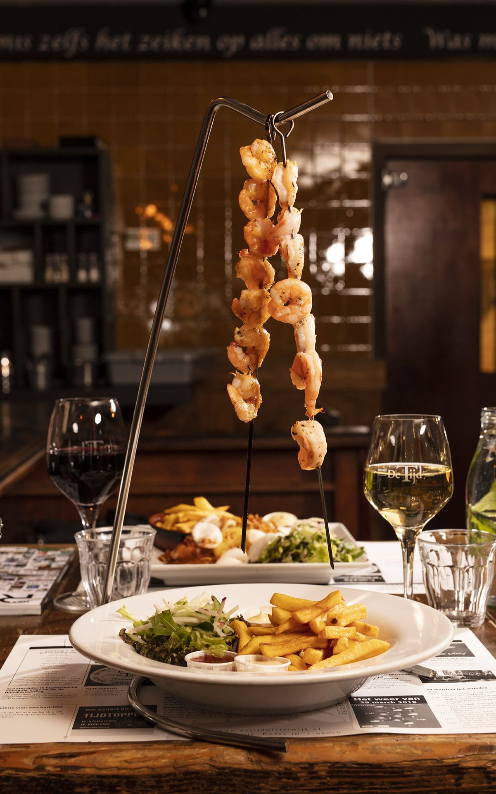
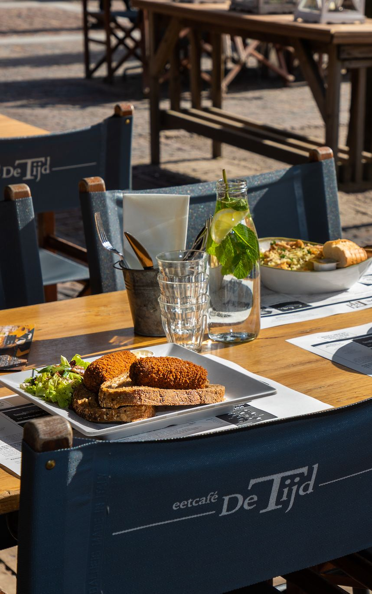
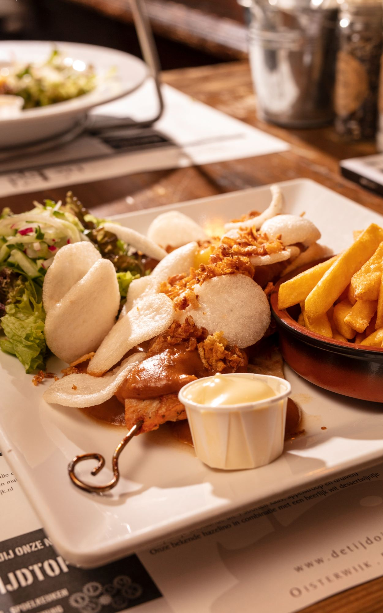
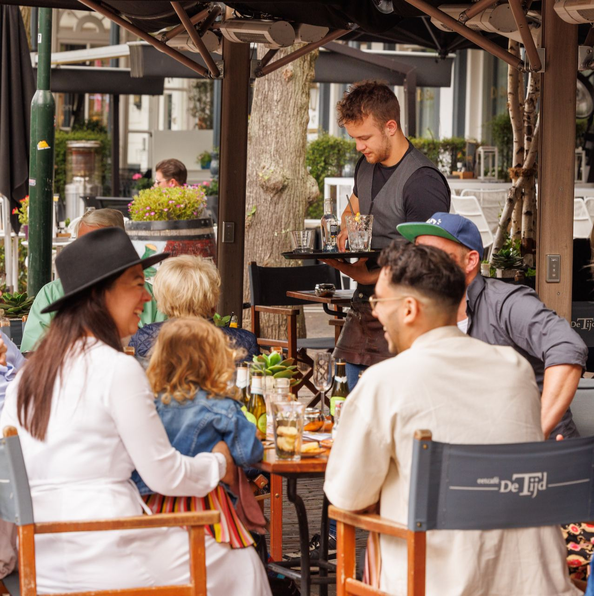
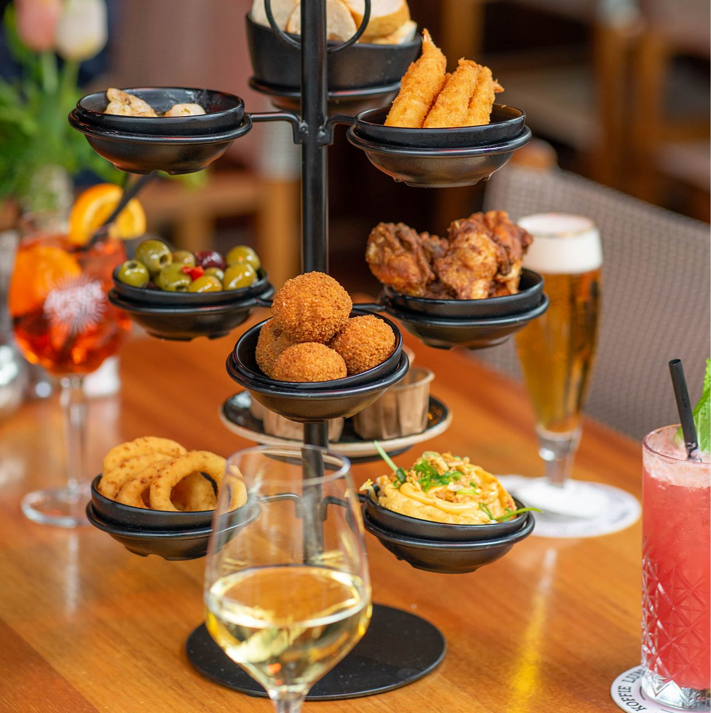
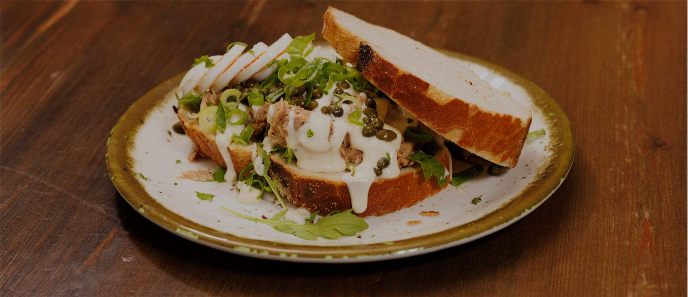
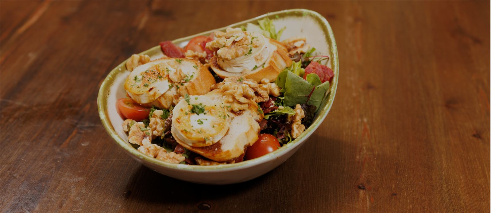
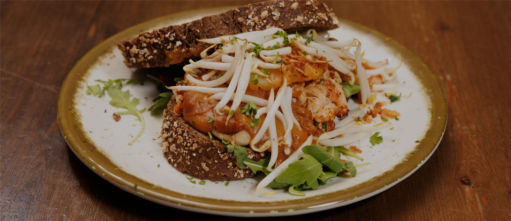

De huiskamer van Oisterwijk
eetcaféDe Tijd
Aan De Lind, midden in de karakteristieke dorpskern. Schuif aan voor koffie en een vers ontbijt, een lunch, diner of een gezellige borrel. Iedere dag, tot in de kleine uurtjes. Reserveren hoeft niet: je bent altijd welkom.



Terug in de tijd
Voel je thuis
Bij eetcafé De Tijd vullen we naast glazen en borden vooral de harten van onze Bourgondische gasten. Ons enthousiaste team maakt het verschil voor sfeerproevers van jong tot oud. Met onze Brabantse gastvrijheid zijn we al 30 jaar het kloppende hart van de karakteristieke dorpskern van Oisterwijk.
Vind je plek op ons terras of kom gewoon gezellig binnen, op iedere dag van de week.
Sinds de eerste dag hebben we ruim 12.000 keer onze deuren geopend, stonden er 682 medewerkers voor je klaar en dekten we 1,5 miljoen tafels voor 3,8 miljoen gasten. Cijfers om stil van te worden. Maar het enige dat je hoeft te onthouden: bij ons ben je nooit een nummer.


Het borrelt en het bruist
Waar is dat feestje?
Kringverjaardagen met kaas en worst en foute ooms? Nee toch? Neem geen enkel risico en trakteer op De Tijd. Dan geef je altijd een gezellig moment met echte aandacht voor elkaar. Lekker in de middagzon of tot in de late uurtjes.
Wij regelen de drankjes, lekkere hapjes en de afwas. Dat is pas een feestje! En op vrijdag is er natuurlijk onze typisch Brabantse VrijMiBo.



TIJDgenoten geven om elkaar
Cadeautips
Bijzondere momenten vier je lekker samen. Daarom heeft De Tijd een passend cadeau voor iedereen, zelfs voor die speciale persoon die zegt dat hij of zij alles al heeft. We hebben vele bierkeuzen en mooie flessen voor wijnneuzen. Last-minute cadeau nodig? Loop binnen, dan kom je nooit met lege handen aan.
Cadeaubonnen
Weleens die bon gepakt? En na een hele fijne avond op de bar geklapt? Lekker hè? Pak in, pak mee en stuur ook eens iemand langs zonder portemonnee!
Plateau van niveau
Brabantse bourgondiërs zonder hoogtevrees geef je natuurlijk ons plateau cadeau. Van boven tot onder gevuld met hapas die zelf niet wisten dat ze zo goed bij elkaar pasten.
Wil je er een nietje bij?
TIJDschrift
Ons eigen huismagazine wordt gretig gelezen door onze gasten, en daar zijn we trots op. Net als onze kaart draait het mee met de seizoenen: twee keer per jaar, als ZomerTijd en WinterTijd. Met de mooiste producten, gezellige evenementen, lokale facts en de talk of the town. En de talk of De Tijd.
Jouw exemplaar ligt altijd voor je klaar om bij ons te lezen of mee naar huis te nemen. Zelf breaking news dat niet mag ontbreken? Mail het naar de redactie: info@detijdoisterwijk.nl
De trots van De Tijd
Ons team
Bij ons team van horecahelden past maar één woord: trots. Zij zorgen dat De Tijd nooit stilstaat, door iedere dag opnieuw onze gasten blij te maken met geniet-hier-en-nu-momenten.
Wil je ook onmisbaar worden? Voor leuke mensen met een horecahart maken we altijd plek. Ervaring geen bezwaar, er is niets dat De Tijd je niet kan leren. Loop gewoon binnen en vraag naar Mirjan. Met een n.
Zien we je gauw?
Kom gewoon binnen
We hebben of vinden altijd snel een fijn plekje voor jou en je gezelschap. Reserveren is dus niet nodig: kom binnen op het moment dat jij zover bent.
Openingstijden
Maandag t/m zondag
08:00 – 24:00